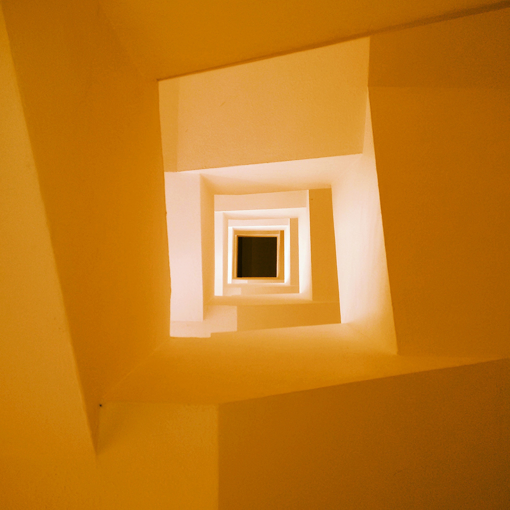
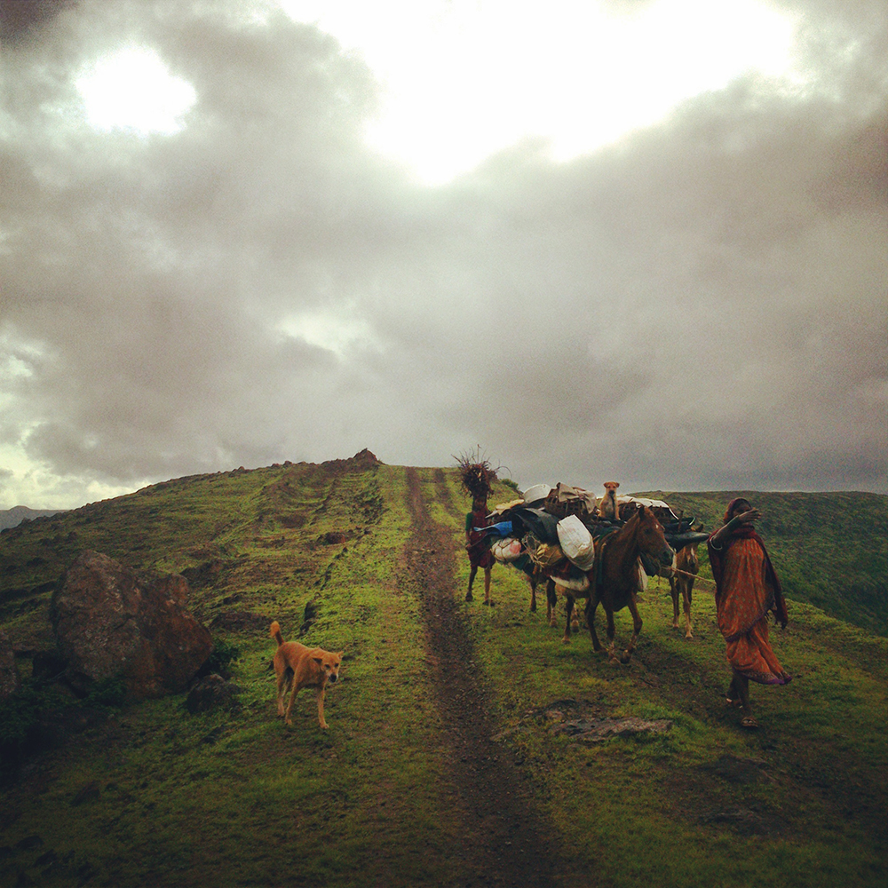
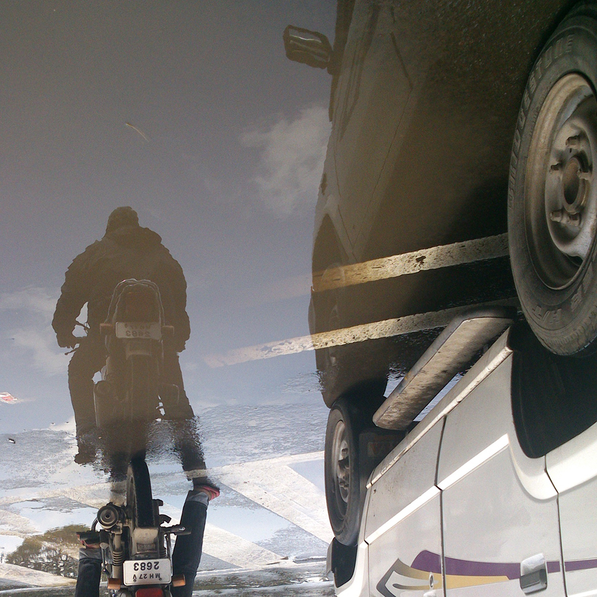
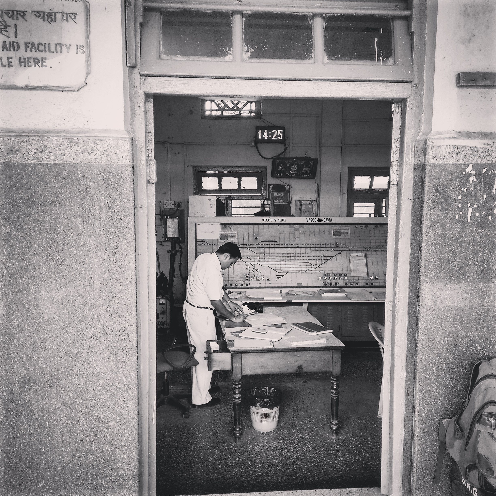
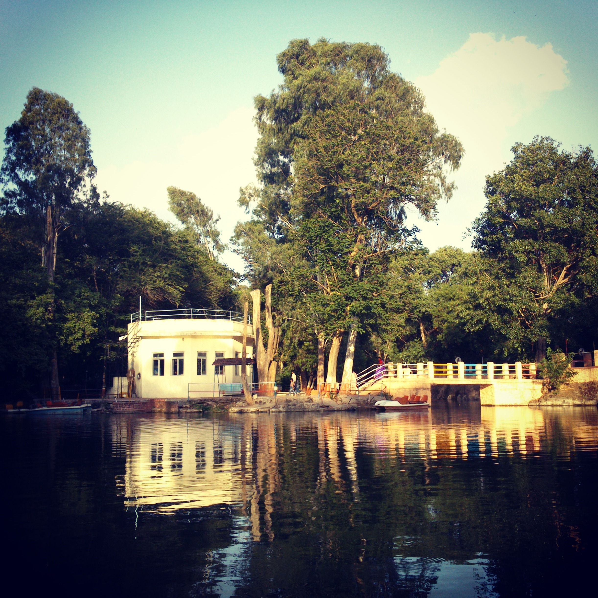
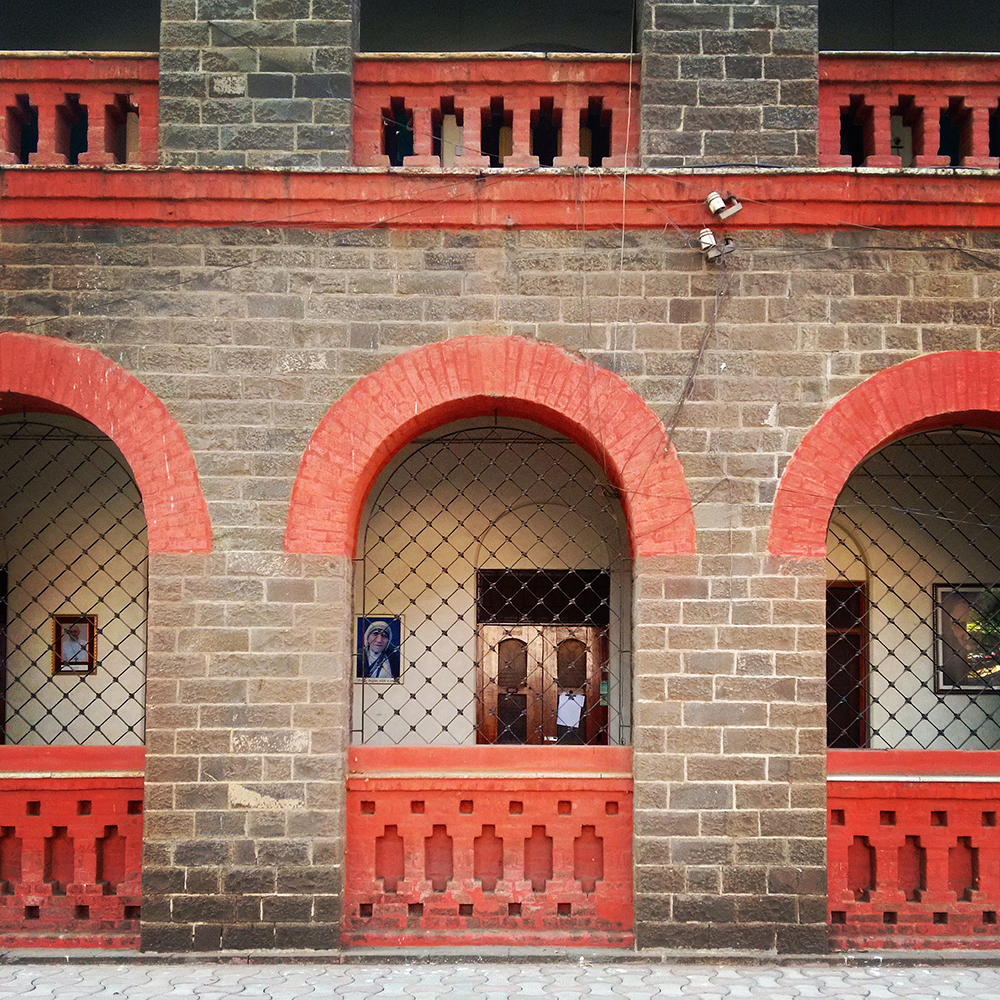

Photography
Mobile Photography
Instagram is probably the reason why I started taking my mobile out of my pocket to click picturres of beautiful things around me. I think I picked up a bit of composition through this medium and I was always somehow looking for geometry or symmetry in my photographs.
Telling stories through a 1:1 frame was my way of expressing my view on things.
     